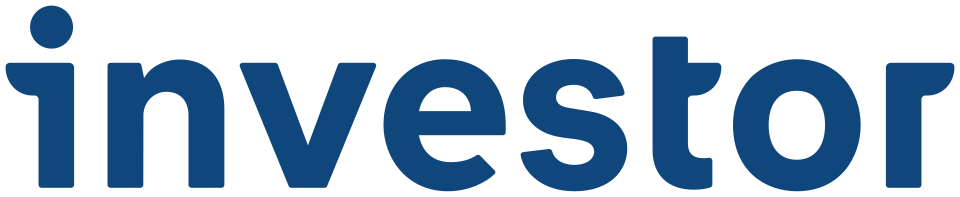

Investor
Investor는 스웨덴 스톡홀름에 본사를 둔 투자·지주회사이다. 스웨덴 최대 기업 가운데 하나이며 Wallenberg 가문의 투자 부문 역할을 하는 사실상의 복합기업으로 여겨진다.
최종 업데이트

Investor는 어떤 브랜드인가
Investor AB는 스웨덴의 투자·지주회사로, 사실상의 복합기업으로 여겨지며 저명한 Wallenberg 가문의 투자 부문 역할을 한다. 가문의 기업들이 관여하는 여러 산업 가운데 주요 산업은 제약, 통신, 산업이다.
스웨덴에서 기업가치가 가장 높은 상장사이며, 스웨덴의 다른 대형 기업 여러 곳에서 주요 지분을 보유하거나 지배권을 가지고 있다. Patricia Industries와 EQT AB를 통해 전 세계 여러 곳에 다수의 투자를 하고 있다.
운영은 Wallenberg 가문 구성원이 아닌 CEO가 맡고, 가문 구성원인 이사회 의장이 이를 감독하는 구조이다. 상장사 보유 지분율은 2022년 기준 기업별로 3%에서 35% 사이였다.
Investor는 어떻게 시작되고 성장했나
Investor는 1916년 스톡홀름에서 설립되었다. 새 스웨덴 법률로 은행이 산업 회사의 주식을 장기적으로 보유하기 어려워지자, Wallenberg 가문의 은행인 Stockholms Enskilda Bank가 보유하던 주식이 새로 만들어진 산업 지주회사 Investor AB로 이전되었다.
이후 Investor AB는 가문의 투자 부문으로서 기능해 왔다. 1994년에는 EQT의 설립자 중 하나로 참여해 EQT의 대부분 펀드에 투자했다.
2023년에는 Johan Forssell이 9년간 맡은 CEO직에서 2024년 5월 물러난다고 발표되었으며, 후임으로 발표된 Christian Cederholm이 현재 CEO이다.
Investor의 브랜드 아이덴티티는 무엇인가
Wallenberg 가문의 투자 부문으로서 스웨덴 대형 상장사 여러 곳의 지분을 보유하고 EQT 설립에도 참여한, 스웨덴에서 기업가치가 가장 높은 상장 지주회사이다.
Investor의 대표 제품과 서비스는 무엇인가
상장 보유 기업으로는 ABB, AstraZeneca, Atlas Copco, Electrolux, Epiroc, Ericsson, Husqvarna AB, Nasdaq, Inc., Saab, SEB, Sobi, Wärtsilä 등이 있다. 이들은 전기화 제품, 바이오제약, 압축기, 가전, 광업, 통신 기술, 방위 제품, 금융 서비스, 선박·발전 엔진 등 다양한 분야를 다룬다.
Patricia Industries는 완전 소유 기업에 투자하고 육성하는 데 중점을 두며, BraunAbility, Laborie, Mölnlycke Health Care, Permobil, Piab, Sarnova, Advanced Instruments, Vectura, 3 Scandinavia를 포함한다. 이 가운데 Mölnlycke Health Care는 일회용 상처 관리 제품을, Vectura는 부동산을 다루고, 3 Scandinavia는 스웨덴과 덴마크에서 이동통신 음성·광대역 서비스를 제공한다.
또한 EQT AB와 EQT 펀드에 투자한다.
Investor는 지금 어떤 상태인가
현재 CEO는 Christian Cederholm이며, 이사회 의장은 가문 구성원인 Jacob Wallenberg이다. 2022년 기준 Patricia Industries 주식의 대부분을 소유하고 있으며, 상장 보유 기업의 지분율은 3%에서 35% 사이였다.
과거에는 IBX를 2010년 Capgemini에 매각했고, Scania 지분을 2008년 Volkswagen Group에 매각했으며, OMX를 2007년 5월 Nasdaq에 매각했다.
Investor 로고는 어떻게 변해왔나
자주 묻는 질문
Investor는 어느 나라 브랜드인가요?
Investor는 스웨덴의 금융 브랜드입니다.
Investor는 언제 설립되었나요?
Investor는 1916년 설립되었습니다.
Investor의 브랜드 아이덴티티는 무엇인가요?
Wallenberg 가문의 투자 부문으로서 스웨덴 대형 상장사 여러 곳의 지분을 보유하고 EQT 설립에도 참여한, 스웨덴에서 기업가치가 가장 높은 상장 지주회사이다.
Investor의 대표 제품은 무엇인가요?
상장 보유 기업으로는 ABB, AstraZeneca, Atlas Copco, Electrolux, Epiroc, Ericsson, Husqvarna AB, Nasdaq, Inc., Saab, SEB, Sobi, Wärtsilä 등이 있다.
Investor는 현재 어떤 상태인가요?
현재 CEO는 Christian Cederholm이며, 이사회 의장은 가문 구성원인 Jacob Wallenberg이다.
Investor의 본사는 어디에 있나요?
Investor의 본사는 스톡홀름에 있습니다(위키데이터 기준).
Investor의 공식 웹사이트는 어디인가요?
Investor의 공식 웹사이트는 https://www.investorab.com/ 입니다.
출처와 검증
Investor 관련 참고: 공식 웹사이트 · 위키데이터 Q1671804 · 한국어 위키백과 · 영어 위키백과. 브랜드명은 한글과 원어를 함께 표기하되 데이터에 없는 표기는 만들지 않습니다. 기원 국가·설립연도는 검수된 정의문에서 확인된 값을 우선하고, 없을 때만 공식 웹사이트 URL이 일치하는 위키데이터 개체의 값을 씁니다. 위키데이터 값은 2026-11-14 기준입니다.